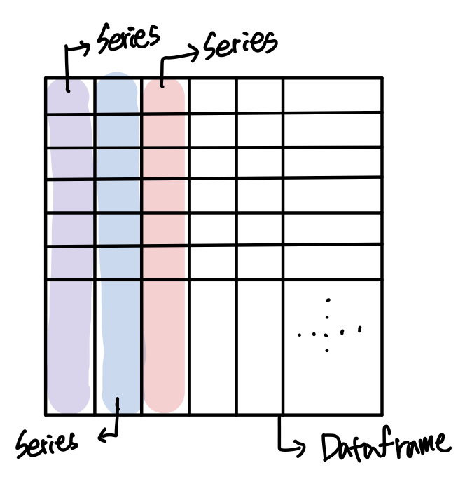

오늘은 Pandas에서 Dataframe과 Series에 대해서 알아보고 각각의 메소드를 정리해 보았습니다.
참고 자료
판다스는 AI와 머신러닝에서 자주 쓰이는 파이썬 라이브러리입니다. 데이터 분석을 할 때, 데이터의 수집, 전처리 등의 과정이 대부분 Dataframe의 형태로 이루어지기에 많이 사용되는 라이브러리입니다.
Dataframe은 데이터 테이블(표)를 자료구조로 표현해 놓은 것이며, 행과 열로 이루어져있다.
Series는, Dataframe의 하위 자료형이라고 보면된다. 1개의 열이 시리즈이고, 시리즈들이 모여 Dataframe을 이루는 구조이다.
